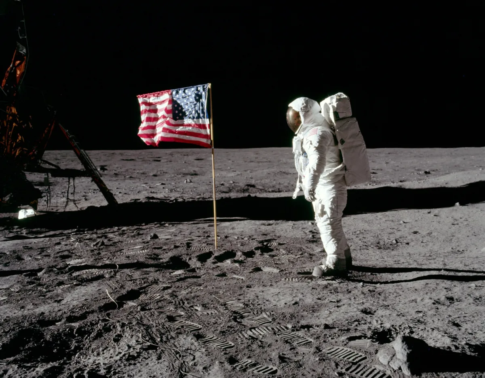

Latest Stories
Marilyn Monroe was found dead in bed this morning in her home in Hollywood
Read More >>

A look at the Apollo 11 mission to land on the moon led by commander Neil Armstrong and pilots Buzz Aldrin and Mike Collins.
Read More >>
The Egyptian star of Doctor Zhivago remembered in the Academy Awards In Memoriam section
Omar Sharif has been remembered by the Oscars in this year's In Memoriam section of the Academy
Awards ceremony.
The Egyptian-born actor never won an Oscar, was nominated for Lawrence of Arabia (as best
supporting actor) but, remarkably, not for Doctor Zhivago, the film for which he is arguably
best remembered. However, he did win a Golden Globe for both roles.
Sharif established himself as an actor in Egypt before making the switch to Hollywood in the
early 60s, with the David Lean-directed Lawrence of Arabia, where he featured in the famous shot
riding a camel out of the desert. Sharif went on to appear in Funny Girl (opposite Barbra
Streisand), the poorly-received Ché! and the cold war romantic thriller The Tamarind Seed.
Sharif died in Cairo aged 83 in 2015. His last credit was the educational film 1001 Inventions
and the World of Ibn Al-Haytham, but he had experienced a late career revival with the
award-winning 2003 drama Monsieur Ibrahim.